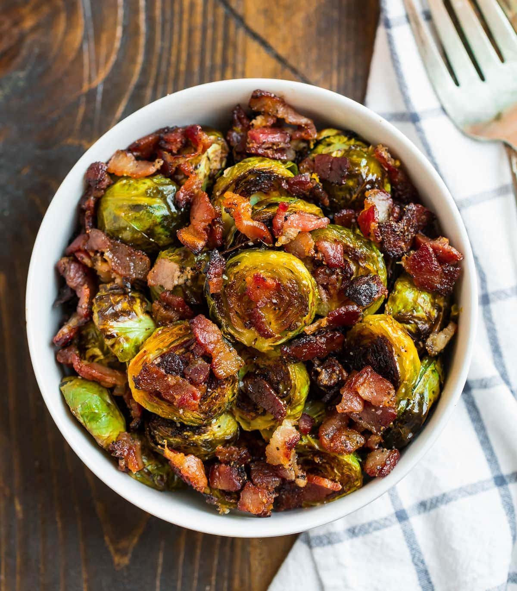

Maple Bacon Brussels Sprouts
>

Sweet and salty roasted Brussels sprouts
Crispy, caramelized Maple Bacon Brussels Sprouts are impossible to resist! Even Brussels sprouts skeptics love this recipe. Great for sides and parties!
Ingredients
- 1 1/2 pounds Brussels sprouts trimmed and cut in half lengthwise
- 6 strips thick-cut bacon
- 1 tablespoon extra virgin olive oil
- 1 tablespoon maple syrup
- 3/4 teaspoon kosher salt
- ½ teaspoon black pepper
Instructions
- Place a rack in the center of your oven and preheat the oven to 400 degrees F. For easy clean up, line a large rimmed baking sheet with aluminum foil, and place the Brussels sprouts in the center. (If you prefer not to use foil, cook the Brussels sprouts directly on the pan or use a silicone baking mat.)
- Cut the bacon crosswise into ¼-inch pieces. Place them on top of the Brussels sprouts. Drizzle the pan with the olive oil and maple syrup and sprinkle with salt and pepper. Gently mix until the Brussels sprouts are evenly coated, then spread them into a single layer on the baking sheet, breaking apart the bacon and scattering it evenly throughout. For even better crisping, flip the Brussels sprouts so that they are all cut side down.
- Bake for 20 to 30 minutes, until the Brussels sprouts are lightly charred and crisp on the outside and tender in the center and the bacon is crisp. The outer leaves of the Brussels sprouts will be very dark too (this is the caramelized maple syrup; they taste amazing). Watch carefully towards the end of the baking time, as the cooking time will vary based on the size of your sprouts. Taste and season with additional salt and pepper as desired. Enjoy hot.
Home